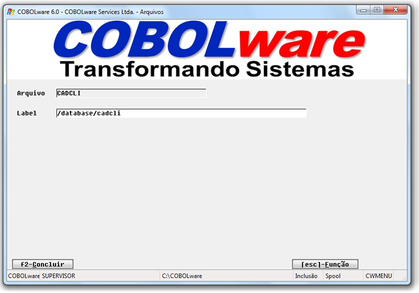
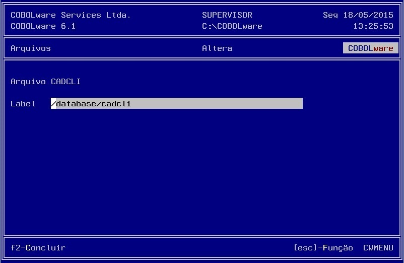

Manutenção da tabela labels de arquivos utilizada pelo manipulador CWSQLC. Esta técnica faz com que o sistema possa ser facilmente adaptado a diferentes organizações de diretórios.
|
Modo gráfico |
|
 |
|
Modo texto |
|
 |
Arquivo
Nome interno do arquivo que deve ser informado como chave de pesquisa.
Label
Nome externo configurado a ser utilizado no momento do OPEN ou SQL(manipulador-SQL).
A tabela de labels é armazenada no arquivo
de configuração do gerenciador.
Este
recurso é especialmente útil para evitar colisões
entre áreas de trabalho em ambientes multiusuários,
pois será considerado o carácter #
(X"23") como dígito do
número da task (um contador de execuções do
gerenciador), logo, se na tabela constar por
exemplo SORT###.TMP e o número da
task estiver em 1748 retornará
SORT748.TMP.
Opções:
Caso o arquivo não esteja cadastrado, é permitido
definir opções de tratamento via variáveis de
ambiente.
|
Comentário |
|
|
CWDRIVE |
"OFF", remove drive dos camihos C:\DAT\CADCLI.DAT para \DAT\CADCLI.DAT |
|
CWFORCE |
Se configurada para "ON" torna o cadastramento obrigatório |
|
CWLEVEL |
Padronizar o separador de níveis de pastas para "\" ou "/" |
|
CWLOCATE |
"ON" , Insere caminho corrente quando caminho omitido |
|
CWPREFIX |
Caminho genérico a ser anexado ao nome, por exemplo: C:\DATABASE |
|
CWSUFIX |
Extensão genérica a ser anexada ao nome, por exemplo: DAT |
|
Valor inicial |
Retorno sob Windows |
Retorno sob Linux |
|
CADCLI |
C:\DATABASE\CADCLI |
/database/CADCLI |